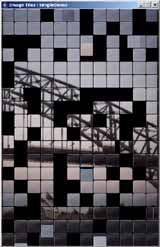

 Image Tiles is an API for producing real-time animated mosaics of images.
The API is flexible (lots of options) and can be extended by creating custom renderers and transitions.
News
Status
Development Team
Contribute to Image Tiles
| Monday 4th April, 2005 | Image Tiles 0.3a released, including the Image Tiles Screensaver |
|---|---|
| Monday 16th November, 2004 | Fixed the Webstart Demos. |
| Monday 6th September, 2004 |
Image Tiles 0.2a released. Screenshots & Demos page added. |
Image Tiles is now in a beta version, having received an amount of refactoring and a medium level of testing. There are still some interactions that could be better abstracted, but major work on the internals will not continue unless specific requests are made by users.
There are, on the other hand, an application or two still intended to be built on top of the API, and these will result new releases as they are completed. See the CURRENT GOALS section for a list of planned features.
The following developers are currently developing or have contributed to the development of Image Tiles.
We prefer not to hand out committer status to every Joe Blogs who asks.
If you have a contribution to make to Image Tiles, please send it to us and we'll be very happy to receive and integrate it if it's at all useful. You will be given full credit for your contributions.
Knowledge of Java 2D is required for working on most parts of this project.
Copyright (c) 2004-2005, Graham Lea. All rights reserved.